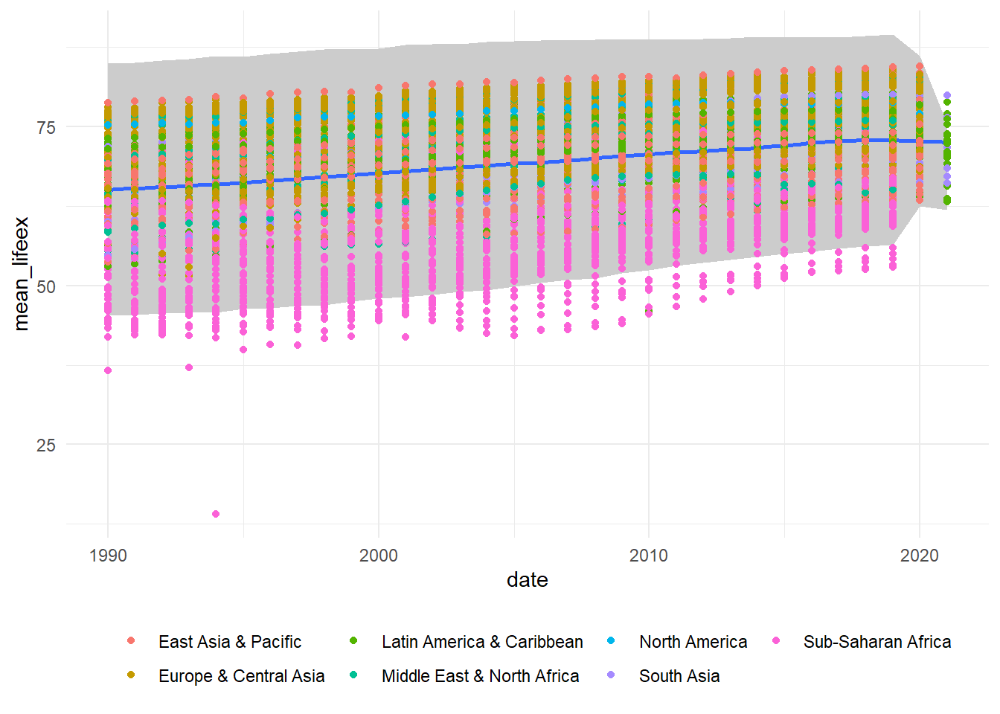

── Attaching core tidyverse packages ──────────────────────── tidyverse 2.0.0 ──
✔ dplyr 1.1.3 ✔ readr 2.1.4
✔ forcats 1.0.0 ✔ stringr 1.5.0
✔ ggplot2 3.4.4 ✔ tibble 3.2.0
✔ lubridate 1.9.2 ✔ tidyr 1.3.0
✔ purrr 1.0.1
── Conflicts ────────────────────────────────────────── tidyverse_conflicts() ──
✖ dplyr::filter() masks stats::filter()
✖ dplyr::lag() masks stats::lag()
ℹ Use the conflicted package (<http://conflicted.r-lib.org/>) to force all conflicts to become errors
library(radiant.data)
Loading required package: magrittr
Attaching package: 'magrittr'
The following object is masked from 'package:purrr':
set_names
The following object is masked from 'package:tidyr':
extract
Attaching package: 'radiant.data'
The following object is masked from 'package:magrittr':
set_attr
The following objects are masked from 'package:lubridate':
month, wday
The following object is masked from 'package:forcats':
as_factor
The following object is masked from 'package:purrr':
is_double
The following object is masked from 'package:ggplot2':
diamonds
The following object is masked from 'package:base':
date
library (spatstat)
Loading required package: spatstat.data
Loading required package: spatstat.geom
spatstat.geom 3.2-7
Attaching package: 'spatstat.geom'
The following objects are masked from 'package:radiant.data':
is.empty, square
Loading required package: spatstat.random
spatstat.random 3.2-1
Loading required package: spatstat.explore
Loading required package: nlme
Attaching package: 'nlme'
The following object is masked from 'package:dplyr':
collapse
spatstat.explore 3.2-5
Loading required package: spatstat.model
Loading required package: rpart
spatstat.model 3.2-8
Loading required package: spatstat.linnet
spatstat.linnet 3.1-3
spatstat 3.0-7
For an introduction to spatstat, type 'beginner'
collapse 2.0.3, see ?`collapse-package` or ?`collapse-documentation`
Attaching package: 'collapse'
The following object is masked from 'package:lubridate':
is.Date
The following object is masked from 'package:stats':
D
tag <-"202311081903"base_url <-"https://github.com/randrescastaneda/pub_data/raw/"data_url <-paste0(base_url, tag, "/data/Rtest1/")wdi <- readr::read_rds(paste0(data_url, "wdi_in1.Rds"))
1. Summary statistics of GDP per capita by region
wdi_result_1 <- readr::read_rds(paste0(data_url, "wdi_summ_out.Rds"))GDP_byregion <- wdi |>group_by(region, date) |>summarise(N =sum(!is.na(gdp)), # Count of non-missing observationsMean =weighted.mean(gdp, pop, na.rm =TRUE), # Mean GDP per capitaSD =weighted.sd(gdp, pop, na.rm =TRUE), # Standard deviationMin =min(gdp, na.rm =TRUE), # Minimum GDP per capitaMax =max(gdp, na.rm =TRUE) # Maximum GDP per capita ) |>rename (year = date)
`summarise()` has grouped output by 'region'. You can override using the
`.groups` argument.
print(GDP_byregion)
# A tibble: 218 × 7
# Groups: region [7]
region year N Mean SD Min Max
<chr> <dbl> <int> <dbl> <dbl> <dbl> <dbl>
1 East Asia & Pacific 1990 22 4913. 8497. 582. 32846.
2 East Asia & Pacific 1991 22 5105. 8691. 579. 33870.
3 East Asia & Pacific 1992 22 5291. 8667. 597. 34049.
4 East Asia & Pacific 1993 22 5483. 8576. 635. 33783.
5 East Asia & Pacific 1994 22 5740. 8619. 669. 34054.
6 East Asia & Pacific 1995 22 6037. 8796. 709. 34868.
7 East Asia & Pacific 1996 22 6340. 9011. 746. 35879.
8 East Asia & Pacific 1997 22 6538. 9045. 782. 36145.
9 East Asia & Pacific 1998 22 6449. 8823. 817. 36099.
10 East Asia & Pacific 1999 22 6635. 8836. 875. 37476.
# ℹ 208 more rows
2. Aggregate stats
# Group by region and date, calculate population-weighted statisticswdi_result_2 <- readr::read_rds(paste0(data_url, "wdi_agg_out.Rds"))aggregate_estimates <- wdi |>group_by(region, date) |>summarise(population =sum(pop), # Total population for the region and yearlifeex_mean =weighted.mean(lifeex, pop, na.rm =TRUE),gdp_mean =weighted.mean(gdp, pop, na.rm =TRUE),povintl_mean =weighted.mean(pov_intl, pop, na.rm =TRUE),lifeex_sd =weighted.sd(gdp, pop, na.rm =TRUE),gdp_sd =weighted.sd(gdp, pop, na.rm =TRUE),povintl_sd =weighted.sd(pov_intl, pop, na.rm =TRUE),lifeex_min =min(lifeex),gdp_min =min(gdp),povintl_min =min(pov_intl),lifeex_max =max(lifeex),gdp_max =max(gdp),povintl_max =max(pov_intl),lifeex_median =weighted.median(lifeex, pop, na.rm =TRUE),gdp_median =weighted.median(gdp, pop, na.rm =TRUE),povintl_median =weighted.median(pov_intl, pop, na.rm =TRUE) ) |>pivot_longer(cols =starts_with("lifeex_") |starts_with("gdp_") |starts_with("povintl_"),names_to =c(".value", "estimate"),names_sep ="_" ) |>rename (pov_intl = povintl) |>rename (pop = population) |>select(estimate, region, date, pop, lifeex, gdp, pov_intl) |>arrange(match(estimate, c("mean", "sd", "min", "max", "median")))
`summarise()` has grouped output by 'region'. You can override using the
`.groups` argument.
print(aggregate_estimates)
# A tibble: 1,090 × 7
# Groups: region [7]
estimate region date pop lifeex gdp pov_intl
<chr> <chr> <dbl> <dbl> <dbl> <dbl> <dbl>
1 mean East Asia & Pacific 1990 1754166013 68.2 4913. 0.590
2 mean East Asia & Pacific 1991 1779284317 68.4 5105. 0.573
3 mean East Asia & Pacific 1992 1802946756 68.9 5291. 0.550
4 mean East Asia & Pacific 1993 1825777375 69.3 5483. 0.523
5 mean East Asia & Pacific 1994 1848480100 69.6 5740. 0.483
6 mean East Asia & Pacific 1995 1870755748 70.0 6037. 0.450
7 mean East Asia & Pacific 1996 1892721009 70.3 6340. 0.410
8 mean East Asia & Pacific 1997 1914534267 70.7 6538. 0.408
9 mean East Asia & Pacific 1998 1935514675 71.1 6449. 0.417
10 mean East Asia & Pacific 1999 1955084080 71.3 6635. 0.386
# ℹ 1,080 more rows
# A tibble: 5,029 × 24
# Groups: date [32]
region iso3c date country pov_ofcl gdp gini lifeex pop pov_intl
<chr> <chr> <dbl> <chr> <dbl> <dbl> <dbl> <dbl> <dbl> <dbl>
1 Sub-Saharan … AGO 1990 Angola NA 5793. NA 41.9 1.18e7 0.165
2 Sub-Saharan … AGO 1991 Angola NA 5659. NA 43.8 1.22e7 0.168
3 Sub-Saharan … AGO 1992 Angola NA 5158. NA 42.2 1.26e7 0.192
4 Sub-Saharan … AGO 1993 Angola NA 3799. NA 42.1 1.30e7 0.274
5 Sub-Saharan … AGO 1994 Angola NA 3729. NA 43.4 1.35e7 0.279
6 Sub-Saharan … AGO 1995 Angola NA 4149. NA 45.8 1.39e7 0.249
7 Sub-Saharan … AGO 1996 Angola NA 4557. NA 46.0 1.44e7 0.226
8 Sub-Saharan … AGO 1997 Angola NA 4728. NA 46.3 1.49e7 0.215
9 Sub-Saharan … AGO 1998 Angola NA 4790. NA 45.1 1.54e7 0.212
10 Sub-Saharan … AGO 1999 Angola NA 4740. NA 45.4 1.59e7 0.214
# ℹ 5,019 more rows
# ℹ 14 more variables: pov_lmic <dbl>, pov_umic <dbl>, mean_lifeex <dbl>,
# sd_lifeex <dbl>, hl_lifeex <lgl>, ll_lifeex <lgl>, mean_gdp <dbl>,
# sd_gdp <dbl>, hl_gdp <lgl>, ll_gdp <lgl>, mean_gini <dbl>, sd_gini <dbl>,
# hl_gini <lgl>, ll_gini <lgl>
#Graph
ggplot(outliers) +geom_ribbon(aes(x = date, ymin = mean_lifeex -2.5* sd_lifeex, ymax = mean_lifeex +2.5* sd_lifeex),fill ="gray80") +geom_smooth(aes(x = date, y = mean_lifeex)) +# Add the confidence interval as a gray shadowgeom_point(aes(x = date, y = lifeex, color = region), se =FALSE) +# Add points for each countrytheme_minimal() +theme(legend.position ="bottom", # Set legend position to bottomlegend.box ="horizontal", # Display legend in horizontal layout ) +guides(color =guide_legend(title =NULL) ) # Remove the legend title
Warning in geom_point(aes(x = date, y = lifeex, color = region), se = FALSE):
Ignoring unknown parameters: `se`
`geom_smooth()` using method = 'gam' and formula = 'y ~ s(x, bs = "cs")'

SIMULATED DATA
l_svy <- readr::read_rds(paste0(data_url, "svy_sim_in1.Rds")) l_svy <-Map(function(df, year) mutate(df, Year = year), l_svy, names(l_svy)) svy_2001_2010 <-bind_rows(l_svy)#Removing the character "Y" before year svy_2001_2010$Year <-as.integer(sub("Y", "", svy_2001_2010$Year))#svy_2001_2010 <- svy_2001_2010 |>#select(-year) # Define the poverty lines in 2017 PPP prices pov_line <-c(2.15, 3.65, 6.85)# Function to calculate the FGT indices for a given poverty line calculate_FGT <-function(data, line) { data |>group_by(Year) |>summarise(headcount =sum(weight * (income < line)) /sum(weight),pov_gap =sum((1- (income / line)) * (income < line) * weight) /sum(weight),povseverity =sum((1- (income / line))^2* (income < line) * weight) /sum(weight) ) |>mutate(poverty_line = line) } poverty_indicators <- pov_line |>map_df(~calculate_FGT(svy_2001_2010, .))print(poverty_indicators)